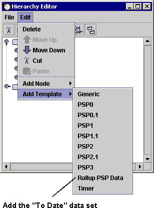
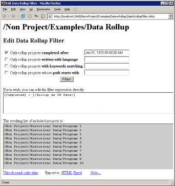
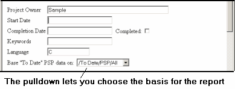

Using Multiple "To Date" Data Sets Using Multiple "To Date" Data Sets
Using Multiple "To Date" Data Sets Using Multiple "To Date" Data SetsBy default, the dashboard maintains one set of To Date data, which rolls up data from all of your completed PSP projects. This may not meet your data needs. For example, if you continually work in several different programming languages, you might want multiple, independent sets of To Date data, one for each programming language. "Data Rollup Templates" address this need.
Data Rollup Templates allow filtering of the data that appears on process forms such as the Project Plan Summary. Once you have created a data rollup in your hierarchy, you can choose to view the forms based on all of your PSP related data or just on the subset that you have defined. The Data Rollup Templates can also be used to rollup data from many small PSP-sized tasks up to the project level. It's just a matter of how you define the data rollup filter expression.
Extra To Date data sets are created in much the same way you would create a new project. You just create the data set in the hierarchy as if you are adding a Project Template.

You can rename the data set node just like you can a project. Also, the location of the data set itself in the hierarchy is not important. Just place it wherever it seems to fit best to you. For more information on adding nodes and templates and on using the hierarchy editor in general, see the hierarchy editor help topic.
Note - there is always a default rollup, defined automatically by the dashboard, which is called "/To Date/PSP/All". This rollup will not appear in your hierarchy, but its data is available for use by projects in your hierarchy.
When you first create a new To Date data set, it will (by default) be rolling up data from all completed PSP projects. Therefore, the first thing you'll probably want to do is customize the filter which is used to generate the list of projects that it will roll up data from. This is done via data entered in an HTML form, much like the standard process forms.
To access the filtering form, use the task selector to navigate to the To Date data set you have just created. Once there, click the script button and choose "Edit Data Rollup Filter."

The filter form will appear that will let you edit the expression that is used to filter the project list that is used in the data rollup.

Some common filtering criteria are displayed as choices on the form:
You can check the appropriate boxes, and edit the details for each criteria. When you're done, click the "Filter!" button. This button will compute the corresponding filter expression, and put it in the box below. This will also cause the "list of included projects" to recalculate, showing you all the projects in your hierarchy that meet the criteria.
If you feel comfortable with the data expression syntax, you can edit the filter expression directly. After you make changes to the expression, you'll have to move the cursor out of the text area (by hitting TAB or by clicking somewhere on the HTML page background) for the included project list to recalculate.
TIP: If the included project list is empty and you don't think it should be, you may have a syntax error in your filter expression. A syntax error in your expression will essentially be treated the same as the expression "false". Note, however, that an empty included project list does not automatically mean your filter expression syntax is bad - it may be a valid expression, and there just might not be any projects that meet the criteria.
To view rolled up data, use the active task selector to navigate to a data rollup node, then click the script button and choose the first option. The Data Analysis center will appear - but it will be displaying only data from the projects that you have included in your rollup! In fact, the main "PSP Data Analysis" center which is launched from the configuration menu is nothing more than a view of the rolled up data for the automatic data rollup called "/To Date/PSP/All".
Once you have created an additional data rollup set, you will notice that all of your PSP Project Plan Summaries will contain an extra drop-down list. This drop down list is located in the "Project Settings" section of the plan summary form. The drop-down list is labeled "Base 'To Date' PSP data on:", and the drop down list will contain all the PSP data rollup objects you have defined, plus the extra "default" rollup, which is called "/To Date/PSP/All". Choosing a different rollup from this list will cause this project to use that rollup as the basis for data in the "Plan" and "To Date" columns.

TIP: remember that data in the plan column freezes when planning is marked complete, and data in the "To Date" columns freezes when the project is marked complete. Therefore, if Planning and/or the entire project is marked complete when you alter the drop-down, the data in the "Plan" and/or "To Date" columns will not recalculate.